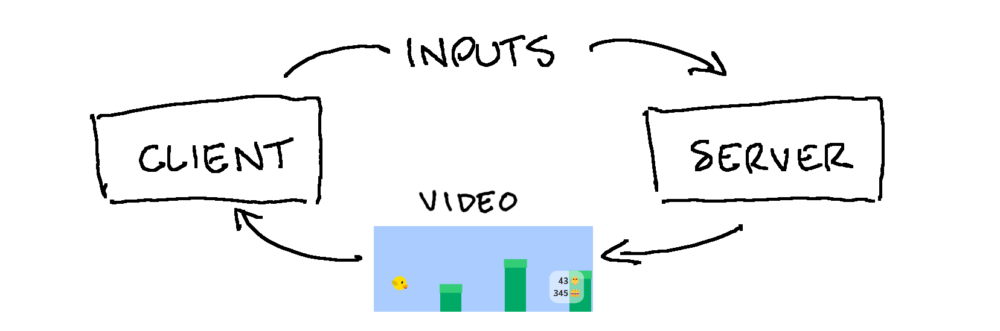
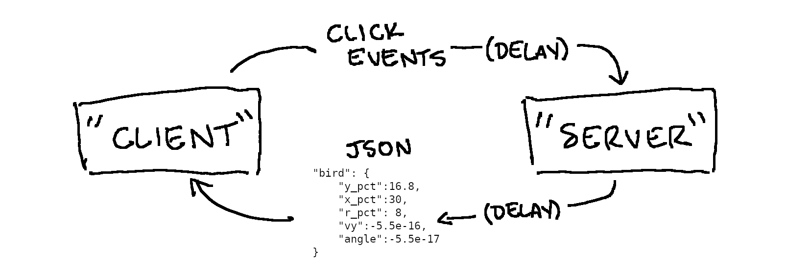

Google's new Stadia cloud gaming service launched last Tuesday, and experiences with the platform have been mixed. Some reviewers have had it work almost flawlessly for them, but still have some questions about the limited library and somewhat unclear audience of the service. Others have been less lucky, experiencing comical amounts of latency and other technical glitches.
People have already said a lot about Stadia's prospects, and about those of cloud gaming in general, and I won't try to retread that ground here. Instead, I want to focus on a particular aspect of the technical challenge facing Stadia - one I think will be especially important to whether cloud gaming lives or dies: network lag.
My pet theory is that people will tolerate lowish resolutions, weird compression artifacts, mediocre framerates, and all sorts of other issues, as long as their experience is snappy and responsive. But if it does this, people will run away screaming. Even if each horribly-lagged frame is rendered in full 4k60 beauty, it will not matter. High latency can be such a dealbreaker that Nvidia's GeForce NOW streaming service, a competitor to Stadia, will literally not let you stream with a connection speed under 10 Mbps.
So I was pleasantly surprised when Stadia's VP of Engineering went out and said that Stadia would have negative latency:
"Negative latency" is a concept by which Stadia can set up a game with a buffer of predicted latency between the server and player, and then use various methods to undercut it. It can run the game at a super-fast framerate so it can act on player inputs earlier, or it can predict a player's button presses.
Time-travel-sounding buzzword aside, I was intrigued by the techniques listed here. Could Stadia really predict inputs precisely enough, or run the game fast enough, to effectively "negate" latency? If so, why were players experiencing severe latency issues anyway? To find out, I tried implementing some of these tricks myself.
I thought the best way to try out some of these techniques would be through experimenting on an actual game - something simple, but with gameplay precise enough that any latency issues would be nice and frustrating. The result was, let's say, unoriginal. I give you the new smash hit, "Flapping Bird":
So we have a game to work with - but it is not representative of how Stadia or other cloud gaming services work, for reasons we will soon see.
Like most other video games you have played before, the above game is being run and rendered entirely on your own device. This means that the latency is nice and low, but it also means that I can only show you as sophisticated a game as your device can actually run.
Cloud streaming flips this around by running the game on a computer somewhere else. Your device records your inputs and sends them to the game server, and the game server sends you back your video:
The benefit of this is that the game server can be as powerful and well-maintained as Google's money can buy. Your device just has to be powerful enough to stream video, which most modern phones and TVs can do just fine. However, your device and the game server now have to communicate with each other. And that communication adds a delay.
This article won't attempt to actually deal with the video encoding and decoding steps, which are a whole separate challenge in their own right. Instead of sending encoded video data, we will send a JSON string that describes each of the objects to render. The client will still handle the rendering. Also, instead of actually sending that JSON over a real network, we will just schedule in a delay before it "arrives." So our setup will be a little bit different:
On the other side, we will program a similar delay into "sending" our inputs. So there are two separate delays: one for our inputs to travel to the server, and one for the video data to travel back. Combine the two delays and, voila, we've taken a perfectly good game and ruined it:
The slider above sets the total round-trip latency for the game. This total latency is (arbitrarily) split evenly between your inputs traveling to the "server" and the video data traveling back to you. Try it out and see how added latency affects the game experience.
Now that we have latency in our system, we can start trying our various tricks for undercutting it.
The first trick mentioned was to "run the game at a super-fast framerate so it can act on player inputs earlier." Stadia would not be the first system to use this sort of technique: in particular, a fellow named Dwedit implemented a method called Run-Ahead for the RetroArch retro game emulator, and people have speculated that Stadia may be attempting something similar. Run-Ahead basically basically works like this:
So, if the game is expected to have 3 frames of lag, then it has to run the game forward 3 "speculative" frames for every 1 frame actually processed or displayed. In other words, the computer running the game has to run it up to 3 times faster than it would normally have to. (That said, actually rendering the video - often the most compute-intensive step - only has to be done once, if your game engine is set up the right way.)
Let's see what that extra processing gets us. Here is a rough implementation of the run-ahead technique for our game:
My subjective experience is that this technique can sort of make low latencies (say, up to 200 ms) feel even lower, but that it causes unbearable jittering at higher latencies. In particular, tapping the bird causes it to "snap" upward instead of hopping smoothly.
Why does this happen? There is one big difference between using Run-Ahead to manage the kind of latency that it was developed for (i.e., RetroArch games), and using it to manage our cloud gaming setup In RetroArch, most of the lag happens after inputs have already been received. In our case, the inputs themselves have to travel to the server, so there is also some latency in even receiving them. That means a few (bad) things for Run-Ahead here:
In other words, Run-Ahead alone won't solve our problem, since we cannot wait for the inputs to travel to the server. What else can we do?
So we know that we can only get our game video from the server, and we know that we don't want to wait for our inputs to reach the server first. How could we see the effects of our inputs without waiting for the server? We could just have the server preemptively send us video data for all possible cases, and have the client select the appropriate one for the user's input.
For our little game, if there is only one frame of latency, you only need two cases: a case for if the user clicks, and a case for if they don't. If there are two frames of latency, you have to send four cases: two cases for the current frame, times two cases for the previous one. Extending this, we have to send 2N cases, where N is the number of frames of lag. If you are playing a 60 fps game with 200 ms latency, that means you will have about 12 frames of latency, which will require that the server pre-emptively send you 4,096 possible cases to select from. And that is for a game with just one binary input!
But all is not lost: we can simplify, at the cost of a slight loss in accuracy. Instead of assuming the user can press the button every single frame, let's assume they could only have pressed it once during our lag period. That way, we only have to handle N cases: one for if they didn't click recently, one for if they clicked at this frame, one for if they clicked at previous frame, and so on.